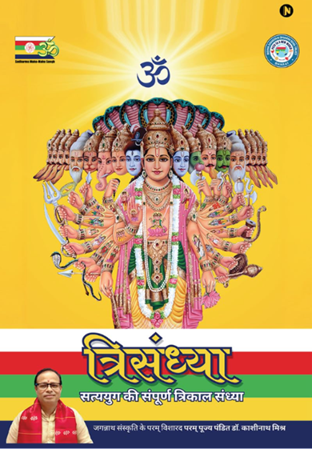

Trikāla Sandhyā
ॐViśva Sanātana Dharma Sevā Ṭrusṭ
॥ Jaya Śrī Mādhava ॥

"Për qytetërimin njerëzor, Triśandhyā është si Sañjīvanī (nektar hyjnor)."
Kryeni Triśandhyā në të gjitha tre orët e sandhyā çdo ditë, lexoni një kapitull të Śrīmad Bhāgavata Mahāpurāṇa çdo ditë, dhe këndoni emrin Mādhava vazhdimisht në mendje.
Mbani 5 mësimet e mëposhtme së bashku me Trikāl Sandhyā
1. Mësoni të bindeni.
2. Mësoni të prisni.
3. Mësoni të doni dhe të tregoni dhembshuri ndaj të gjitha qenieve të gjalla.
4. Mbani vetëpërmbajtje mbi shqisat.
5. Hiqni dorë nga ndjenja e “unë dhe imja, ti dhe jotja” (ndjenja e egos).
Tre Kohët e Trishandjas (Triśandhyā)
Përmbajtja e Trishandjas (Triśandhyā)
- 1. Mantra
- 2. Śrī Viṣṇoḥ Ṣoḍaśanāmastotram
- 3. Śrī Daśāvatāra Stotram
- 4. Durgā-Mādhava Stuti
- 5. 108 times “Mādhava” name
- 6. Jayaghoṣa
Shënim: Ju lutemi dëgjoni audion zyrtare për shqiptim të saktë.
1. Mantra
Bhargo Devasya Dhīmahi Dhiyo Yonaḥ Pracodayāt ॥ ] * 3 herë
2. Śrī Viṣṇoḥ Ṣoḍaśanāmastotram
(Gjashtëmbëdhjetë Emrat e Zotit Shri Vishnu (Śrī Viṣṇu))
Śayane Padmanābhaṃ Ca । Vivāhe Ca Prajāpatim ॥
Yuddhe Cakradharaṃ Devaṃ । Pravāse Ca Trivikramam ॥
Nārāyaṇaṃ Tanutyāge । Śrīdharaṃ Priyasaṅgame ।
Duḥsvapne Smara Govindaṃ । Saṅkaṭe Madhusūdanam ॥
Kānane Nārasiṃhaṃ Ca । Pāvake Jalaśāyinam ॥
Jalamadhye Varāhaṃ Ca । Gamane Vāmanam Caiva ॥
Parvate Raghunandanaṃ ।
3. Śrīdaśāvatāra Stotram
(Dashavatara Stotram (Daśāvatāra Stotram) i kompozuar nga Shri Xhajadeva Xhi (Śrī Jayadeva Jī))
Pralaya Payodhi-jale Dhṛtavān Asi Vedam ।
Vihita Vahitra-caritram Akhedam ।
Keśava Dhṛta-Mīna Śarīra Jaya Jagadīśa Hare ॥ 1 ॥
Kṣitirati Vipulatare Tava Tiṣṭhati Pṛṣṭhe ।
Dharaṇi Dharaṇa Kiṇa Cakra Gariṣṭhe ॥
Keśava Dhṛta-Kacchapa-rūpa Jaya Jagadīśa Hare ॥ 2 ॥
Vasati Daśana-śikhare Dharaṇī Tava Lagnā ।
Śaśini Kalaṅka Kaleva Nimagnā ॥
Keśava Dhṛta-Śūkara Rūpa Jaya Jagadīśa Hare ॥ 3 ॥
Tava Kara Kamala-vare Nakham Adbhuta Śṛṅgam ।
Dalita-Hiraṇyakaśipu-tanu Bhṛṅgam ॥
Keśava Dhṛta-Narahari Rūpa Jaya Jagadīśa Hare ॥ 4 ॥
Chalayasi Vikramane Balim Adbhuta Vāmana ।
Pada-nakha Nīra Janita Jana-pāvana ॥
Keśava Dhṛta-Vāmana Rūpa Jaya Jagadīśa Hare ॥ 5 ॥
Kṣatriya Rudhira Maye Jagad-apagata Pāpam ।
Snapayasi Payasi Śamita Bhava Tāpam ॥
Keśava Dhṛta-Bhṛgupati-rūpa Jaya Jagadīśa Hare ॥ 6 ॥
Vitarasi Dikṣu Raṇe Dikpati Kamanīyam ।
Daśa-mukha Mauli-balim Ramaṇīyam ॥
Keśava Dhṛta-Raghupati Rūpa Jaya Jagadīśa Hare ॥ 7 ॥
Vahasi Vapuṣi Viśade Vasanam Jaladābham ।
Hala-hati-bhīti-milita-Yamunābham ॥
Keśava Dhṛta-Haladhara-rūpa Jaya Jagadīśa Hare ॥ 8 ॥
Nindasi Yajña Vidher Ahaha Śruti Jātam ।
Sadaya Hṛdaya Darśita Paśu-ghātam ॥
Keśava Dhṛta-Buddha-śarīra Jaya Jagadīśa Hare ॥ 9 ॥
Mleccha Nivaha Nidhane Kalayasi Karavālam ।
Dhūmaketum-iva Kim Api Karālam ॥
Keśava Dhṛta-Kalki Śarīra Jaya Jagadīśa Hare ॥ 10 ॥
Śrī-Jayadeva-kaver Idam Uditam Udāram ।
Śṛṇu Sukha-dam Śubha Dam Bhava-sāram ॥
Keśava Dhṛta-Daśa-vidha Rūpa Jaya Jagadīśa Hare ॥ 11 ॥
4. Durgā - Mādhava Stuti
(Recitim i Durga (Durgā) - Mādhava Stuti)
Jaya He ! Durgā Mādhava Kṛpāmaya Kṛpāmayī ।
Durgāṅku Sebī Mādhava Hoile Mo Dīaṃ Sāīṃ ॥ 0 ॥
Jaya He ...
Bahū Rupe Jaya Durge, Byāpī Achu Sarva Ṭhābe ।
Ramā Umā Bāṇī Rādhā To Chaḍā Anya Ke Nāhiṃ ॥ 1 ॥
Jaya He ...
Madana-Mohana Rupe Byāpī Achu Sarva Ṭhābe ।
Mohana Citta Mohilū Śrī Sarva Maṅgalā Tuhī ॥ 2 ॥
Jaya He ...
Dharma Saṃsthāpane Janma Yadi Hvanti Nārāyaṇa ।
Durgāṅku Chāḍī Mādhaba Kheli Bāra Śakti Kāhiṃ ॥ 3 ॥
Jaya He ...
Mādhabanka Khela Pāiṃ Deha Dharū Mahāmāyī ।
Mādhabanku Pati Putra Rupe Khelāuchu Tuhī ॥ 4 ॥
Jaya He ...
Mādhabanku Durgā Kole Jehuṃ Dekhe Benī Ḍole ।
Tāhāra Bhāgyar Kathā Brahmā Śibe Na Jogāī ॥ 5 ॥
Jaya He ...
Jaya Durgati Nāśinī Abhirāmar Jananī ।
Śubhāgamana Karaṃtū Mādhabanku Kole Neī ॥ 6 ॥
Jaya He ...
5. 108 herë emri “Mādhava” (në heshtje)
Këndoni emrin 'Mādhava' të Jagannātha Mahāprabhu 108 herë.
Mos e thoni me zë. Numëroni në gishta dhe këndoni emrin mendërisht.
6. Xhajaghosha (Jayaghoṣa)
Xhajaghosha (Jayaghoṣa) duhet të recitohet mendërisht, pa folur me zë.
(Mund të këndohet me zë vetëm nëse jeni në këmbë.)
Tvameva Mātā Ca Pitā Tvameva
Tvameva Bandhuśca Sakhā Tvameva ।
Tvameva Vidyā Draviṇaṃ Tvameva
[ Tvameva Sarvaṃ Mama Deva Deva ] ॥ * 3 herë
Om̐ Namo Brahmaṇya Devāya Gobrāhmaṇa Hitāya Ca |
Jagat Hitāya Kṛṣṇāya Goviṃdāya Namo Namaḥ ॥
[ Om̐ Anaṃta Koṭi Viśva Brahmāṇḍa Nātha Parabrahma Nārāyaṇa Mahāviṣṇu Bhagavān Kalkirām Śrī Śrī Śrī Satya Anaṃta Mādhava Mahāprabhu Jī kī Jaya! ] * 3 herë
[ Mātā Mahālakṣmī Jī kī Jaya! ] * 3 herë
[ Mātā Vaiṣṇo Devī Jī kī Jaya! ] * 3 herë
[ Sarva Devī-Devatāoṃ kī Jaya! ] * 3 herë
[ Satya Sanātana Dharma kī Jaya! ] * 3 herë
[ Sudharma Mahā-Mahā Saṅgha kī Jaya! ] * 3 herë
O Zot! Le të mblidhen të gjithë besimtarët e gjithë botës sa më shpejt të jetë e mundur —
Thoni me gëzim një herë: "Hari Hari", "Hari Hari", "Hari Hari"
O Zot! Le të vendosen e Vërteta, Dashuria, Dhembshuria, Falja dhe Paqja mbi këtë tokë dhe gjithë kozmosin sa më shpejt të jetë e mundur —
Thoni me gëzim një herë: "Hari Hari", "Hari Hari", "Hari Hari"
Jaya Śrī Mādhava
Udhëzime të Rëndësishme
Për çlirimin nga kriza e madhe e ardhshme, sipas ‘Bhaviṣya Mālikā’, hiqni dorë nga veprat mëkatare dhe le të gjithë njerëzit të adoptojnë ‘Triśandhyā’ për mbrojtjen e jetës. Në kohën e ndryshimit të epokës, për hyrjen në Satyayuga, ky parim sekret është i vetmi Mṛta Sañjīvanī.
Në kohën e vendosjes së Dharma, sipas udhëzimeve të Zotit Kalki, ne duhet të ndjekim këto gjëra në jetën tonë:
1. Tregoni dhembshuri ndaj të gjitha qenieve të gjalla. Hiqni dorë nga ngrënia e mishit dhe adoptoni një jetë sāttvic. Mos dëmtoni asnjë qenie të gjallë apo asnjë njeri në asnjë mënyrë.
2. Në këtë epokë, këndoni emrin e Mādhava (Zoti). Nëse dëshironi, mund të këndoni me zë ose të kujtoni emrin e Tij në heshtje në mendje.
3. Çdo person duhet t'i përmbahet këtyre pesë virtyteve: E Vërteta, Dashuria, Dhembshuria, Falja dhe Paqja.
4. Çdo person duhet të marrë pjesë rregullisht në Satsaṅg. Satsaṅg do të thotë të mblidheni së bashku për të kënduar cilësitë e Zotit, për të përshkruar lavdinë e Tij dhe për të zhvilluar diskutime shpirtërore.
5. Kryeni Triśandhyā çdo ditë — kujtoni dhe lavdëroni Zotin në mëngjes, mesditë dhe mbrëmje.
6. Këndoni Kalki Mahāmantra të dhënë nga Zoti Kalki çdo ditë.
Rāma Hare Kṛṣṇa Hare, Anaṃta Mādhava Hare ॥
7. Çdo person duhet të ecë në rrugën e Dharma.
8. Duke u ngritur mbi diskriminimin kaste dhe fetar, mbani Satsaṅg me të gjithë.
9. Hiqni dorë nga ndjenja e “unë” dhe “imja”. Një krenari dhe lidhje e tillë e largon një person nga natyra e tij e vërtetë shpirtërore.
10. Lexoni Śrīmad Bhāgavata Mahāpurāṇa në shtëpi çdo ditë. Kur koha lejon, studioni bhajan, kīrtan, Purāṇas, shkrimet e shenjta, Bhaviṣya Mālikā dhe tekste të tjera shpirtërore.
11. Drejtojuni çdo gruaje si “Nënë”/“Mā” dhe çdo burri si “Vëlla.”
12. Para se të hani, së pari ofrojani ushqimin Zotit.
13. Nëse dëshironi të dini më shumë rreth Zotit Kalki dhe kësaj vepre të madhe, kontaktoni numrin e celularit të dhënë në fund të këtij broshure.
Pyetjet më të Shpeshta
1. Pyetje të përgjithshme rreth praktikës së Trishandjas (Triśandhyā)
Triśandhyā mund të bëhet pa u larë. Vendosni dorën në ballë dhe kujtoni Nënë Gaṅgā, duke thënë “Śrī Gaṅge” tre herë. Nëse është e mundur, lani këmbët paraprakisht dhe spërkatni pak ujë mbi veten.
Triśandhyā mund të bëhet kudo — në rrugë, në tren, në një automjet, në vendin tuaj të punës, ose në heshtje brenda zemrës. Në një formë ose tjetër, në një vend ose tjetër, ajo duhet të bëhet pa dështuar.
Śrīmad Bhāgavata Mahāpurāṇa duhet të lexohet vetëm pas larjes, kur jeni të pastër. Gjatë ditëve të menstruacioneve, Triśandhyā bëhet në të gjitha tre kohët si zakonisht — me zë ose brenda zemrës. Për ato shtatë ditë, Śrīmad Bhāgavata Mahāpurāṇa nuk duhet të lexohet, megjithëse mund të dëgjohet.
Gjatë sūtak gjithashtu, Triśandhyā mund të bëhet në të gjitha tre kohët; por në atë kohë Śrīmad Bhāgavata Mahāpurāṇa nuk duhet as të lexohet as të dëgjohet, dhe Satsaṅg nuk duhet të bashkohet. Në të dy rastet, Śrīmad Bhāgavata Mahāpurāṇa dhe artikujt e tjerë të adhurimit nuk duhet të preken.
2. Çfarë duhet bërë nëse Triśandhyā e plotë nuk është e mundur në kohën e duhur?
Nëse Triśandhyā e plotë nuk është e mundur në kohën e duhur, atëherë bëni Triśandhyā të shkurtër në atë kohë, dhe bëni Triśandhyā të plotë më vonë kur koha lejon.
Trikāl Sandhyā mund të bëhet kudo — në vendin e punës, duke ecur në rrugë, duke ngarë makinën, në shkollë, ose edhe duke bërë çdo punë tjetër: në heshtje, brenda mendjes. Kryerja e Trishandjas (Triśandhyā) në kohën e duhur, në çfarëdo vendi, është absolutisht e nevojshme.
Nëse Trikāl Sandhyā nuk mund të bëhet në kohën e duhur, merrni emrin e Zotit Mādhava dhe pendohuni, dhe lutjuni Zotit që nga tani e tutje ajo të bëhet në kohën e duhur; sepse shkrimet e shenjta deklarojnë se Trikāl Sandhyā duhet të bëhet në kohën e saj të duhur.
Metoda e Trikāl Sandhyā kur nuk ka kohë
śloka e dhënë nga Paṇḍitjī në Google Meet. Kur rasti për të bërë sandhyā nuk vjen dhe koha fillon të kalojë, atëherë në vend të sandhyā mund të këndoni emrin e Mādhava 108 herë, Jai Durgā Mādhava 11 herë, dhe të recitoni śloka e dhënë më poshtë një herë.
Daśāvatāra Stotram (Aṃtima Śloka)
Vedān uddharate jagannivahate bhūgolam udbibhrate
daityaṃ dārayate baliṃ chalayate kṣatrakṣayaṃ kurvate।
paulastyaṃ jayate halaṃ kalayate kāruṇyam ātanvate
mlecchān mūrchayate daśākṛtikṛte Kṛṣṇāya tubhyaṃ namaḥ॥
3. Si duhet të bëjnë studentët Triśandhyā së bashku me rutinën e tyre ditore?
Studentët duhet të bëjnë sandhyā e mëngjesit (Brahma Muhurta (Brahma Muhūrta)) dhe të mbrëmjes në kohën e duhur, sipas rregullit. Për shkak të kërkesave të shkollës ose studimit, ata mund të përfundojnë sandhyā e mesditës brenda zemrës, duke medituar mbi Zotin në mendje.
4. Si duhet të bëhet Triśandhyā në vendin e punës?
Nuk ka rregull vendi për Triśandhyā. Mund ta bëni kudo që të jeni — në tavolinën tuaj, në një fabrikë, në një dyqan, në një fushë, ose në rrugë.
Nëse nuk është e mundur ta thoni me zë, bëjeni brenda zemrës; zemra është vend i mjaftueshëm. Nëse është e mundur, hiqni këpucët dhe ulni për një moment; dhe nëse edhe kjo nuk është e mundur, mos e braktisni Triśandhyā për këtë arsye.
Nëse nuk e mbani mend dhe është e mundur, mund të dëgjoni audion e Trishandjas (Triśandhyā). Gjëja kryesore është që të mos humbet.
5. Nëse puna e shtëpisë nuk lë kohë, si duhet të ndiqet praktika e Trishandjas (Triśandhyā)?
Bëni Triśandhyā ndërsa punoni — për këtë nuk ka nevojë të pritet kohë e lirë; edhe ndërsa duart janë të zëna, ajo mund të bëhet brenda zemrës.
Për Bhāgavata, gjeni çfarëdo pak kohe që mundeni — nëse është i mundur një kapitull i plotë, atëherë një kapitull, dhe nëse jo, një faqe e vetme, ose edhe një śloka e vetme. Le të mbahet mend kjo, që asnjë ditë të mos kalojë pa leximin.
6. Si duhet të ndjekin gratë praktikën e Trishandjas (Triśandhyā) në kohën e menstruacioneve?
Në kohën e menstruacioneve, Bhāgavata nuk duhet të lexohet për të gjitha shtatë ditët. Ajo mund të dëgjohet.
Bëni Triśandhyā në të gjitha tre kohët. Nëse nuk e mbani mend, dëgjojeni.
(Mos prekni Shrimad Bhagavat Mahapurana (Śrīmad Bhāgavata Mahāpurāṇa), ose artikuj të tjerë adhurimi.)
7. Nëse një person në një familje ndjek praktikën e Trishandjas (Triśandhyā), a do të marrin të gjithë frytin e saj?
Është e nevojshme që çdo person ta ndjekë vetë. Nëse dikush në familje nuk mund të lexojë, le të dëgjojë Triśandhyā dhe Bhāgavata. Dhe për ata që nuk mund të flasin ose të dëgjojnë, bëni përpjekje, sa më shumë që të jetë e mundur, që ata të shkruajnë emrin ‘Mādhava’ vazhdimisht.
8. Nëse hamë mish dhe pimë alkool, a mund të fillojmë Triśandhyā?
Jo, para se të filloni Triśandhyā duhet të adoptoni një stil jetese plotësisht vegjetarian, nuk duhet as të konsumoni vezë. Çdo lloj dehjeje (si alkooli, bhang (bhāṅg), cigaret, produktet e duhanit, pān masālā, guṭkā, etj.) duhet gjithashtu të ndërpritet në mënyrë afirmative.
9. A duhet të abstenojmë nga qepa dhe hudhra për të filluar Triśandhyā?
Jo, mund të bëni Triśandhyā edhe nëse hani qepë dhe hudhra. Vetëm të gjitha llojet e mishit duhet të shmangen (përfshirë vezën).
10. A mund të këndojnë gratë Gāyatrī Mantra dhe Triśandhyā?
Po, gratë duhet të këndojnë Gāyatrī Mantra tre herë gjatë Trishandjas (Triśandhyā).
11. A mund të këndojmë Gāyatrī Mantra pa Upanayana Saṃskāra (xhaneu)?
Po, mund të këndoni Gāyatrī Mantra edhe nëse nuk mbani fijen e shenjtë xhaneu. Mund të recitoni të gjitha mantrat e Trishandjas (Triśandhyā) pa qenë dīkṣit nga një guru gjithashtu.
12. A mund të këndojmë Gāyatrī Mantra pa Śāpa Vimocana (absolution e mallkimit)?
Po, duhet të këndoni Gāyatrī Mantra tre herë në kohën e kryerjes së Trishandjas (Triśandhyā), pa bërë asnjë absolution mallkimi.
13. Nëse dikush është analfabet, me aftësi ndryshe, foshnjë ose një qytetar i moshuar, i paaftë për të lexuar Triśandhyā, çfarë duhet të bëjë?
Nëse dikush është i paaftë për të lexuar tekstin e Trishandjas (Triśandhyā), ata mund të dëgjojnë audion e saj tre herë në ditë në kohën e Trishandjas (Triśandhyā). Foshnjat përjashtohen nëse nënat e tyre bëjnë Triśandhyā (ata do të përfitojnë). Megjithatë, ata duhet të praktikojnë Triśandhyā ndërsa rriten.
Viśva Sanātana Dharma Sevā Ṭrusṭ
Për Triśandhyā dhe informacione të tjera fetare, kontaktoni në WhatsApp:
+91 9923071727
Uebfaqe Zyrtare dhe Kanale në YouTube
Triśandhyā me kuptim: https://www.trisandhya.com/
Dr Pandit Shri Kashinath Mishra Kanali Zyrtar: https://www.youtube.com/@Dr-Pt-Kashinath-Mishra
Kalki Avatār - Kanali Zyrtar: https://www.youtube.com/@Kalki_Avatara
Dinastia e Zotit Kalki (Rruga drejt një Bote të Re): https://youtube.com/@dynastyofkalki
Kalki Avatār Rusisht: https://youtube.com/@kalkiavatarrussian
Kalki Avatār Telugu: https://youtube.com/@kalkiavatartelugu
Kalki Avatār Spanjisht: https://youtube.com/@kalkiavatarspanish
Kalki Avatār Kannada: https://youtube.com/@kalkiavatarkannada
Jaya Śrī Mādhava
──────────────── ✦ ────────────────